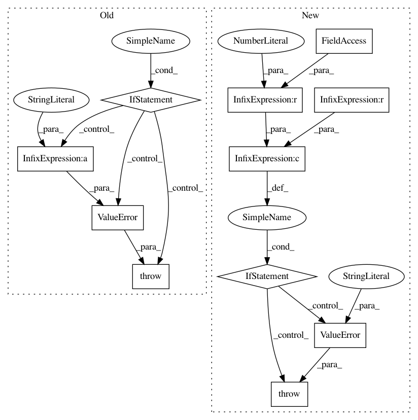

80a74c1989b05c893210cb04ac754498723d1c97,boruta/boruta_py.py,BorutaPy,_check_params,#BorutaPy#,356
Before Change
multi_corr_methods = ["bonferroni", "sidak", "holm-sidak", "holm",
"simes-hochberg", "hommel", "fdr_bh", "fdr_by",
"fdr_tsbh", "fdr_tsbky"]
if self.multi_corr_method not in multi_corr_methods:
raise ValueError("For multiple testing correction method, please "
"choose one of the following:\n" +
"\n".join(multi_corr_methods))
if self.multi_alpha <= 0 or self.multi_alpha > 1:
raise ValueError("Multi_alpha should be between 0 and 1.")
After Change
// check X and y are consistent len, X is Array and y is column
X, y = check_X_y(X, y)
if self.perc <= 0 or self.perc > 100:
raise ValueError("The percentile should be between 0 and 100.")
if self.alpha <= 0 or self.alpha > 1:
raise ValueError("Alpha should be between 0 and 1.")
def _print_results(self, dec_reg, _iter, flag):
In pattern: SUPERPATTERN
Frequency: 3
Non-data size: 11
Instances
Project Name: scikit-learn-contrib/boruta_py
Commit Name: 80a74c1989b05c893210cb04ac754498723d1c97
Time: 2016-04-13
Author: dani.homola@gmail.com
File Name: boruta/boruta_py.py
Class Name: BorutaPy
Method Name: _check_params
Project Name: LCAV/pyroomacoustics
Commit Name: a0055917b6f6a35cd114c49bf0c75b07d7c9bb10
Time: 2018-05-26
Author: eric.bezzam@epfl.ch
File Name: pyroomacoustics/realtime/dft.py
Class Name: DFT
Method Name: synthesis
Project Name: LCAV/pyroomacoustics
Commit Name: a0055917b6f6a35cd114c49bf0c75b07d7c9bb10
Time: 2018-05-26
Author: eric.bezzam@epfl.ch
File Name: pyroomacoustics/realtime/dft.py
Class Name: DFT
Method Name: analysis